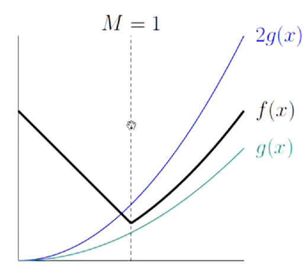

Cost
Cost is a principal concern throughout engineering:
Cost can mean many things
Operational Cost (time to run a program, space requirements)
Development Costs: How long does it take to make
Maintenance costs: Time costs of bug fixes, upgrading features
Costs of failure: How robust is the software? How safe is it?
How fast is fast enough?
For what purpose?
For what input data?
How much space is required? (Memory and disk space)
How will it scale, as input gets big?
Cost Measures (Time)
Asymptotic Cost
Symbolic execution times lets us see the shape of the cost function
Since this is all just approximations, precision is meaningless to an extent
Behavior on small inputs
Small inputs differ minimally in run time
Can always pre-calculate some results
asymptotic behavior has input size becomes very large is more practical
Constant Factors
Order Notation
Instead of specific functions that specify size, rather create families of functions with simliarly behaved magnitudes
Then say "f is bounded by g if it is in g's family"
For any function g(x), the functions 2g(x), 0.5g(x), or g(x) * any constant multiplier , all have the same shape, so they are all a part of g's family
Any function h(x) such that h(x) = K * g(x) for x > M (some constant) has g's shape "except for small values" So these are all in g's family
For upper limits, all functions whose absolute value is everywhere <= some member of g's family, this is the set O(g) or O(g(x))
For lower limits, all functions whose absolute value is everywhere >= some member of g's family, this is the set Ω(g)
Define Θ(g) = O(g) ∩ Ω(g) - the set of functions bracketed in magnitude by two members of g's family

Here, f(x) <= 2g(x) as long as x > 1, so f(x) ⋲ O(g(x))
Also (in this case), f(x) >= g(x) for all values of x, so f(x) ⋲ Ω(g(x))
All factors except for the largest factor become trivialized, so only the largest factor is important in determining the runtime of a function
Using Order Notation
Example
/** Find position of X in list L, or -1 if not found. */
int find(List L, Object X) {
int c;
for (c = 0; L != null; L = L.next, c++)
if (X.equals(L.head)) return c;
return -1;
}
Choose a representative operation (i.e. The number of calls to .equals())
For a list of length N, .equals() is called, in a worst-case scenario, N times
Total # of instructions executed is proportional to the length of the list, so worst-case time is O(N), regardless of units
The worst case time is ALSO O(N2) since N ⋲ O(N2)
The worst case time is Ω(N), since N ⋲ Ω(N),
Because the worst case time is both Ω(N) and O(N), we can say that the function has a Θ bound: Θ(N)
Best-case time: Θ(1) (Number is found at the beginning of the loop)
Nested Loops
for (int i = 0; i < A.length; i++) {
for (int j = 0; j < A.length; j++) {
if (i != j && A[i] == A[j])
return true;
return false
A more efficient example
for (int i = 0; i < A.length; i++)
for (int j = i + 1; j < A.length; j++)
if (A[i] == A[j]) return true;
return false;
Recursion and Recurrances: Fast Growth
boolean occurs (String S, String X) {
if (S.equals(X)) return true;
if (S.length() <= X.length()) return false;
return
occurs(S.substring(1), X) ||
occurs(S.substring(0, S.length()-1), X);
Binary Search: Slow Growth
boolean isIn(String X, String[] S, int L, int U) {
if (L > U) return false;
int M = (L+U)/2;
int direct = X.compareTo(S[M]);
if (direct < 0) return isIn(X, S, L, M-1);
else if (direct > 0) return isIn(X, S, M+1, U);
return true;
Merge Sort
List sort(List L) {
if (L.length() < 2) return L;
//Split L into L0 and L1 of about equal size
L0 = sort(L0); L1 = sort(L1);
//return merge of L0 and L1